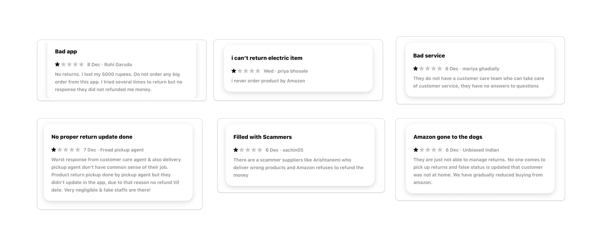
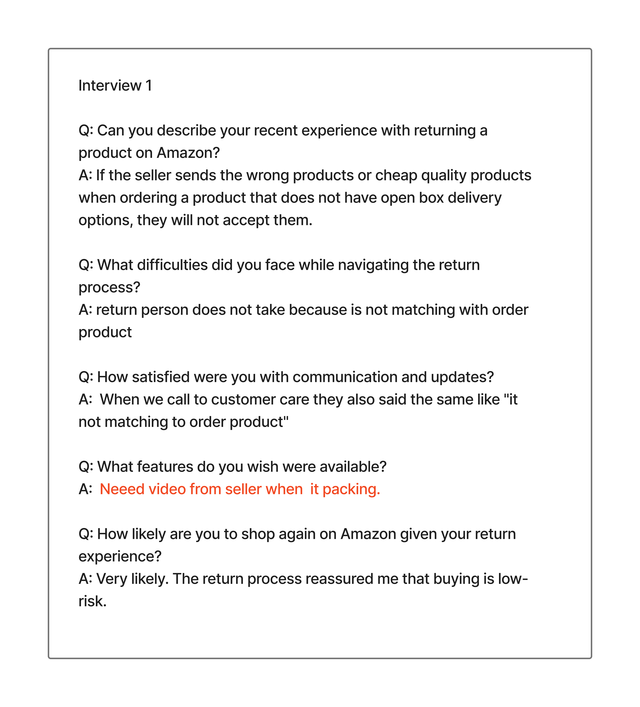
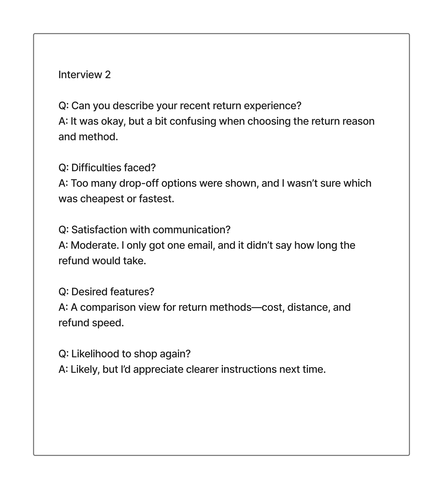
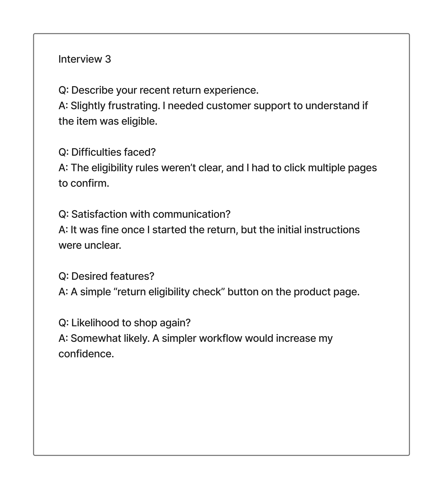
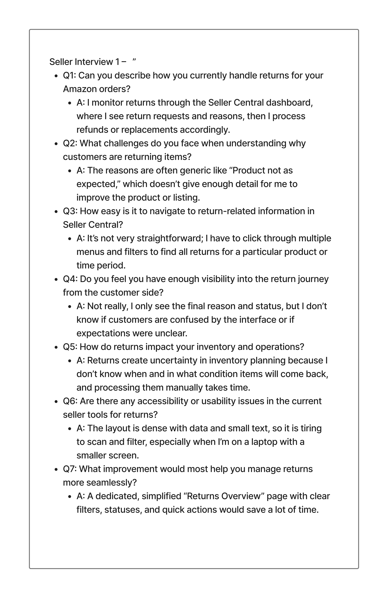
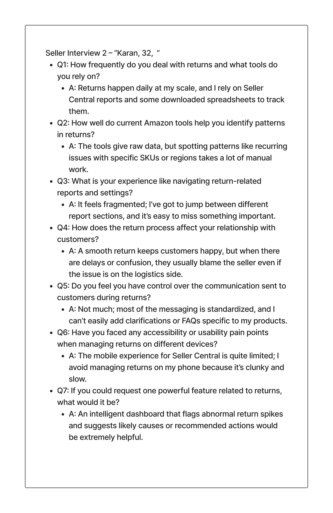
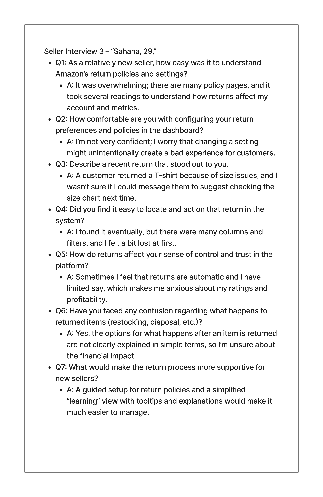

Enhancing Amazon’s Return Process
Problem Statement
Enhancing Amazon’s Return Process: Improving Accessibility, Simplifying Navigation, and Creating a Seamless Experience for Customers and Amazon.
Project Goal
To redesign Amazon’s return process by making it more accessible, easy to navigate, and streamlined—ultimately reducing customer effort, minimizing errors, and improving overall satisfaction for both customers and Amazon.
5W’s And 1H
Who: Amazon customers, including: Regular users First-time users Elderly users Users with disabilities Amazon customer support teams Amazon logistics and operations teams
Where: On Amazon’s: Mobile app Website Across all regions where customers use online return options.
Why: Customers face confusion or difficulty navigating the current return flow. Accessibility barriers prevent some users from completing returns independently. A simplified process increases: Customer satisfaction Return completion rates Refund accuracy Operational efficiency Ultimately benefits both customers and Amazon by reducing support calls and processing delays.
When: During any point after a purchase when a customer wants to: Return a defective or incorrect item Seek a refund Typically within Amazon’s standard return window.
What: The Amazon return process needs improvement in: Accessibility Navigation simplicity Clarity of steps Overall user experience The project aims to make returns faster, easier, and error-free.
How: By redesigning and improving the Amazon return process through: 1. Simplifying the return flow Reducing the number of steps required to initiate a return Creating a more intuitive, guided interface Adding clear visual indicators and progress steps
Comparison of Old vs. New Home Screen: Enhancing User Navigation and Accessibility

Primary Research Findings: Identifying User Pain Points and Challenges in Amazon
As part of our secondary research, we analyzed PhonePe reviews on PlayStore, and AppStore. A significant number of users expressed disappointment with the overall user experience of the app. Here are some of the key user complaints:
User interview (buyers)
Can you describe your recent experience with returning a product on Amazon?
What difficulties, if any, did you face while navigating the return process?
p>How satisfied were you with the communication and updates during the return process?
What features do you wish were available to make the return process easier?
How likely are you to shop again on Amazon given your return experience?
  Seller interview (buyers)
What challenges do you face when processing customer returns on Amazon?
How do you currently track and manage returned items?
Are the return policies and procedures clear and easy to follow from your side?
How does the return process impact your inventory and operational efficiency?
What tools or features would help you handle returns more effectively?
Have you encountered any issues with the communication flow between Amazon, you as a seller, and the customer during returns?
How do returns affect your overall selling experience on Amazon?
What improvements would you suggest to simplify the return navigation and management interface for sellers?
How well does the current return process integrate with your existing order management systems?
What kind of analytics or reporting would you find helpful to better understand return trends?
  Enhancing Amazon’s Return User Experience: Streamlining Navigation and Key Features for Improved Accessibility and Functionality

proof videos for sellers and Customers. - finding place for button.
To build credibility, we need to include proof videos for sellers—specifically footage of the packing process in the box, followed by customer unboxing.
During the brainstorming stage, we prioritized enhancing usability. Our analysis showed that a large part of the display—particularly the bottom section—is easier to reach for left- and right-handed users alike.

https://www.figma.com/proto/L8a6dzu2ZjcXHrVGO7KcBu/Amazon-Return?page-id=0%3A1&node-id=9-183&p=f&viewport=-49%2C229%2C0.55&t=pguvPknWp2k9wWMk-1&scaling=scale-down&content-scaling=fixed&starting-point-node-id=7%3A2